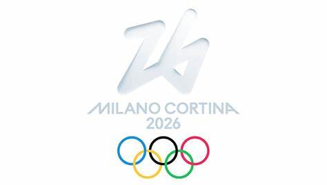

|  |
Os Jogos Olímpicos de Inverno de 2026, oficialmente denominados XXV Jogos Olímpicos de Inverno, e
comumente conhecidos por Milão-Cortina 2026, serão um evento multiesportivo marcado para as cidades
italianas de Milão e de Cortina d'Ampezzo, ambas no nordeste do país. Essa será a quarta edição dos
Jogos Olímpicos a serem realizados na Itália. Antes dessas Olimpíadas, Cortina d'Ampezzo já havia
sediado os Jogos Olímpicos de Inverno de 1956, a capital, Roma, sediou os Jogos Olímpicos de Verão de
1960 e Turim sediou os Jogos Olímpicos de Inverno de 2006. Historicamente, esta será a primeira vez em que duas cidades oficialmente serão as sedes dos Jogos Olímpicos, pois em diversas edições anteriores, existiram a sede principal e uma ou mais subsedes. |
| Fonte: https://pt.wikipedia.org/wiki/Jogos_Ol%C3%ADmpicos_de_Inverno_de_2026 | |